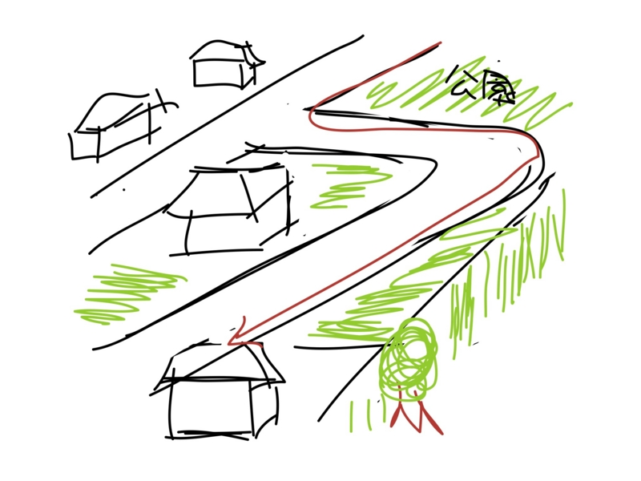
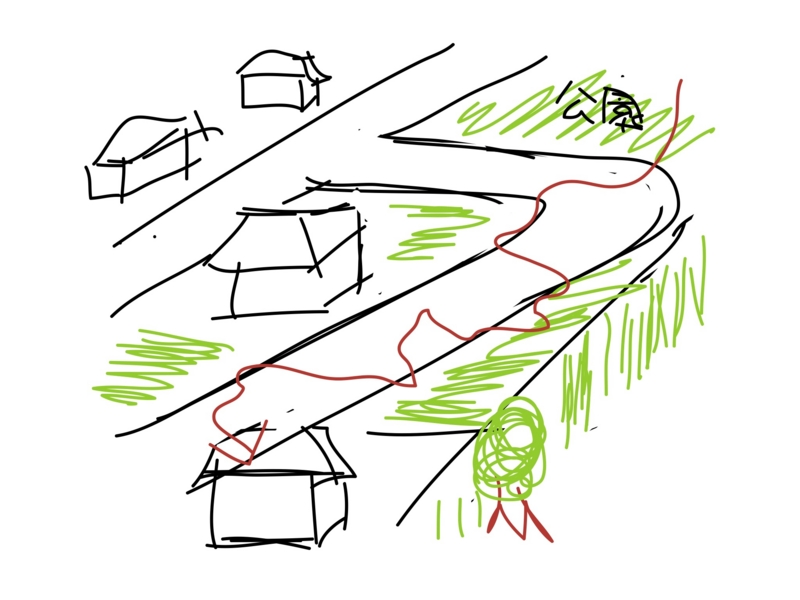
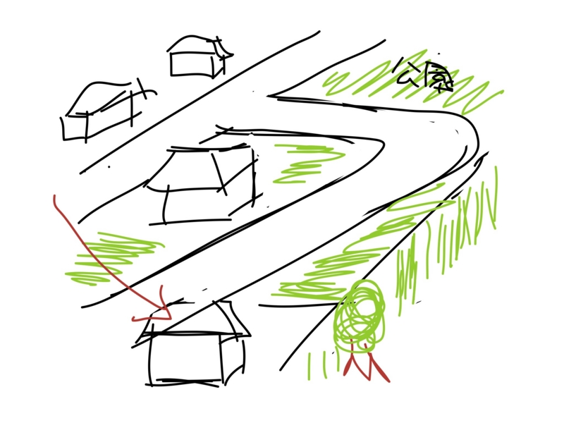

三つの歩き方
公開日：
親父が昔、僕に話してくれたことをふと思い出したので書いておこうと思う。
まだ僕が小学生で、伊賀の名張に住んでいたころ。空地の多い住宅地の隅っこに、自分ちがあった。実際、リビングに隣接する三角形の空き地は公民館の建設が予定されていたが、市におカネがないせいか、周りに家がないせいか、草が生えるに任されていて、事実上、僕ら兄弟の野球場となっていた。
その開けたリビングに。ある昼下がりに、出張続きで家にいることの少ない親父がたまたま、下着とパンツを身に纏い、腕を組んで、少し離れたとことにある公園の方を睥睨していた。今ならそのスタイル、猥褻物陳列罪に問われかねないところだけど、当時は今よりもちょっとだけ社会が優しかった。
それはともかく。もうじき息子どもがその方から帰ってくるはずなのだ。
まず帰ってきたのは、だるやなぎ家の長兄たるこの私。はるばる30分の道のりを踏破して、ご帰宅なさったというわけだ。

その頃の自分は相当の常識人だったようで、道の端っこを折り目正しく、サクサクと歩いてきたらしい。なんとも面白味のないやつだと、今になって思う。
次に、だいぶ経って弟2号が帰ってきた。

石ころを蹴りながら歩いているのか、道の右を歩いたり、左を歩いたり。たまたま興味を引くものがあればしゃがんで観察したり、拾ってみたり、投げてみたり、それを追いかけたり、ともにかく真っ直ぐ歩くということがない。
親父は、そのうち放っておけば帰ってくるだろう、それにしても弟1号の帰りは遅いな、何をしているんだか、と思ったらしい。

すると、弟1号が向かいの空地を縦断しつつ帰ってきた。夏草が生い茂るのもなんのその、盛り土を攀じることもまったく苦にしない。これが近道というわけでもない。なぜなら、学校はそれとは違う方向にあるからだ。
親父は言った。「同じように育てたのに、なんと性格の違うことだ。だが、それがいい」と。